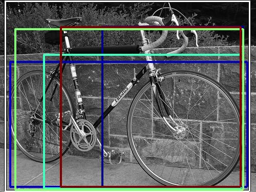
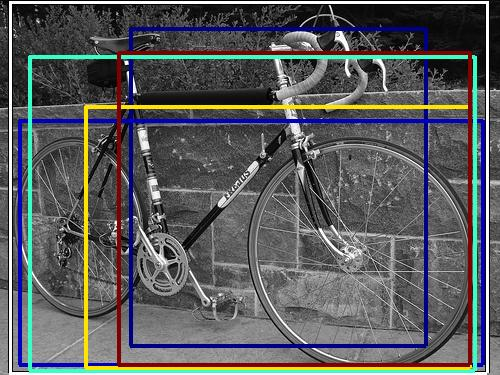

0.308244

0.316570

0.338658

0.384866

0.412587

0.415032

0.459298

0.515771

0.595173

0.603471
| Target image | 0.308244 | 0.316570 | 0.338658 | 0.384866 | 0.412587 | 0.415032 | 0.459298 | 0.515771 | 0.595173 | 0.603471 |
Target image |  43537.035156 |  33748.414062 |  33253.359375 |  28429.044922 |  26704.886719 |  26656.550781 |  21741.023438 |  20966.636719 |  19414.087891 |  18200.486328 |
Target image |  59492.421875 |  58531.054688 |  56771.554688 |  53079.410156 |  49795.820312 |  49207.996094 |  47908.492188 |  39725.667969 |  34252.828125 |  34237.710938 |
Target image |  99271.203125 |  67846.429688 |  66886.609375 |  58771.183594 |  58316.363281 |  41027.910156 |  36604.453125 |  34317.160156 |  26085.378906 |  22560.986328 |
Target image |  73185.710938 |  56588.351562 |  55897.210938 |  51437.492188 |  38861.722656 |  33251.140625 |  32849.210938 |  32103.144531 |  29854.960938 |  29097.433594 |